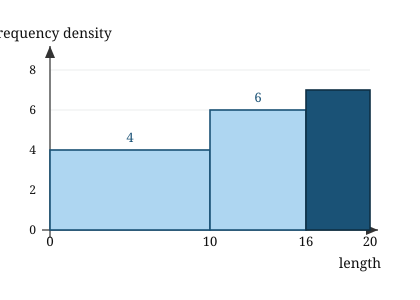

<script src="/assets/redirect.js"></script>
<section class="theory" data-section="S1-2.1">
<h2>2.1 The mode and the modal class</h2>
<p class="src">Based on Cambridge International AS &amp; A Level Mathematics: Probability &amp; Statistics 1 Coursebook (Dean Chalmers), Chapter 2 Measures of central tendency, printed pp.28–29 (Key point 2.1, Worked examples 2.1–2.2, Exercise 2A). Own wording and new numbers. The mean and the median are left to the later subsections of this chapter, as in the book.</p>
<p class="key-words"><strong>Key words:</strong> <em>mode</em>, <em>modal class</em>, <em>frequency density</em></p>
<p>A set of data may be summarised by an average. One such average is the <strong>mode</strong>: the value that occurs most often. A list can have more than one mode, or no mode at all, if no value occurs more often than the others.</p>
<p>For example, in the list \(7\), \(9\), \(8\), \(7\), \(10\), \(7\), \(9\), \(6\), \(8\), \(7\), \(9\), the value \(7\) occurs four times, which is more than any other value, so the mode is \(7\).</p>
<p>When data have been grouped, the raw recordings can no longer be seen, so a single mode cannot be read off. Instead we name the <strong>modal class</strong>: the class with the highest frequency density. In a histogram the modal class is the class with the tallest column. A common error is taking the class with the highest frequency as the modal class, which is reliable only when every class has the same width. If there is no modal class, then every class has the same frequency density, so the frequencies are in the same ratio as the class widths.</p>
<div class="worked-example">
<h4>Worked example 1: The mode of a short list</h4>
<p class="src">Book: the die table on p.28 and Exercise 2A question 1; new list</p>
<p>The eleven recordings \(7\), \(9\), \(8\), \(7\), \(10\), \(7\), \(9\), \(6\), \(8\), \(7\), \(9\) are made. Find the mode.</p>
<ol class="steps">
<li>The value \(7\) occurs four times, \(9\) occurs three times, \(8\) occurs twice, and \(10\) and \(6\) occur once each. <span class="mark">M1</span></li>
<li>The mode is therefore \(7\). <span class="mark">A1</span></li>
</ol>
<p class="final"><strong>Answer:</strong> \(7\)</p>
</div>
<div class="worked-example">
<h4>Worked example 2: The modal class from unequal class widths</h4>
<p class="src">Book: Worked example 2.1, p.28; new frequencies and widths</p>
<p>The lengths, in centimetres, of \(104\) pieces of wire are grouped as follows. The class \(0\)–\(10\) contains \(40\) pieces, the class \(10\)–\(16\) contains \(36\) pieces, and the class \(16\)–\(20\) contains \(28\) pieces. The classes are continuous, with the usual convention that each class includes its left-hand boundary. Find the modal class.</p>
<ol class="steps">
<li>The class widths are \(10\), \(6\) and \(4\). The frequency densities are \(40\div 10=4\), \(36\div 6=6\) and \(28\div 4=7\). <span class="mark">M1</span></li>
<li>The greatest frequency density is \(7\), so the modal class is \(16\)–\(20\), even though that class has the smallest frequency. In a histogram this class has the tallest column. <span class="mark">A1</span></li>
</ol>
<p class="final"><strong>Answer:</strong> The modal class is \(16\)–\(20\).</p>
</div>
<p></p>
<p>The frequency densities used in Worked example 2 are as follows.</p>
<table class="plain">
<thead>
<tr><th>Class</th><th>Frequency density</th></tr>
</thead>
<tbody>
<tr><td>\(0\) to \(10\)</td><td>\(4\)</td></tr>
<tr><td>\(10\) to \(16\)</td><td>\(6\)</td></tr>
<tr><td>\(16\) to \(20\)</td><td>\(7\)</td></tr>
</tbody>
</table>
<h3>Quick check</h3>
<div class="quick-check" data-q="QC1">
<p>The values \(6\), \(9\), \(7\), \(9\), \(4\), \(9\), \(8\) are recorded. What is the mode?</p>
<p class="final"><strong>Answer:</strong> \(9\)</p>
</div>
<div class="quick-check" data-q="QC2">
<p>A histogram of grouped lengths has frequency densities \(5\), \(8\) and \(6\). What is the frequency density of the modal class?</p>
<p class="final"><strong>Answer:</strong> \(8\)</p>
</div>
<div class="quick-check" data-q="QC3">
<p>Two classes have widths in the ratio \(3:2\). There is no modal class, and the frequency of the first class is \(48\). What is the frequency of the second class?</p>
<p class="final"><strong>Answer:</strong> \(32\)</p>
</div>
</section>
